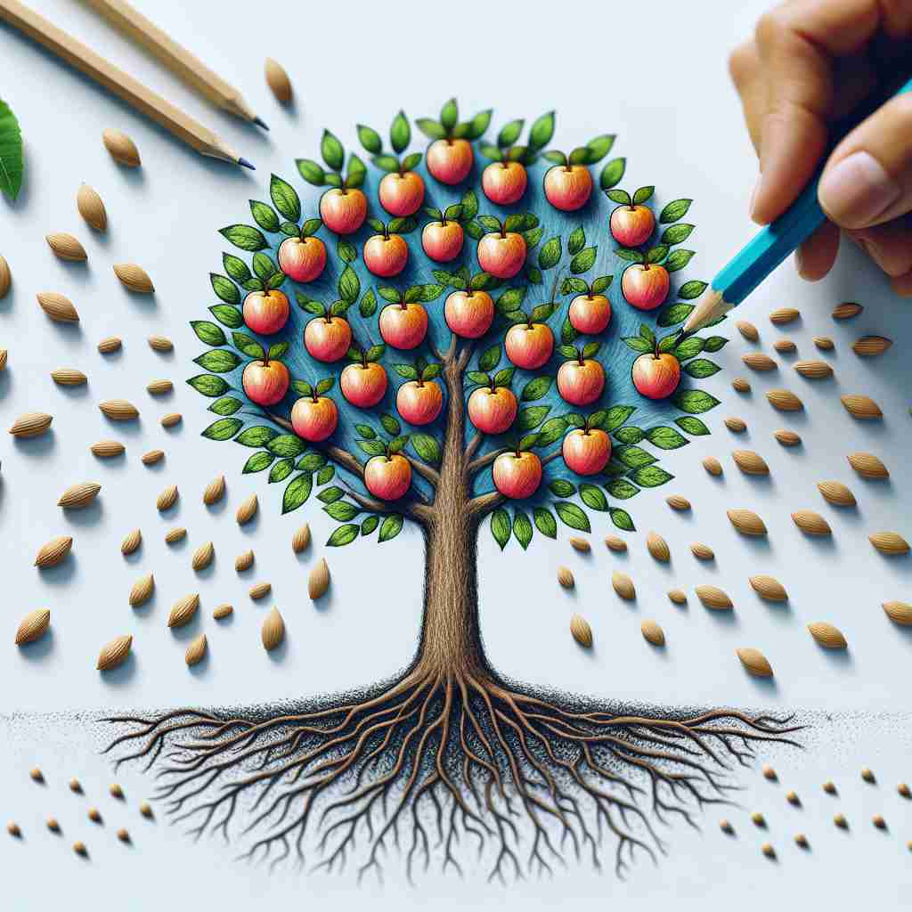

💬 The artist focuses on the dissemination of information through his drawings. 这位艺术家通过他的绘画作品专注于信息的传播。

💬 The dissemination of knowledge helps people understand new ideas. 知识的传播帮助人们理解新观念。
💬 The artist focuses on the dissemination of information through his drawings. 这位艺术家通过他的绘画作品专注于信息的传播。
💬 The dissemination of knowledge helps people understand new ideas. 知识的传播帮助人们理解新观念。
🧠 想象'dissemination'是把种子撒向四面八方。无论是信息、知识、想法还是物质，都像种子一样被广泛传播。这个形象有助于理解和记忆该词在不同语境下的用法。
🔈 [dɪ,semɪ'neɪʃn]
🗝️ n. the act of spreading something, especially information, widely 传播某事，尤其是信息，广泛地。
🎭 在一个新闻编辑室，记者们忙碌地撰写关于国际突发事件的报道。与此同时，主编站在高处，宣布必须将消息迅速 disseminate 给全球观众。屏幕上，一个推特动态迅速传播，体现了信息广泛传播的核心含义。
💬 The dissemination of news has become much faster with the internet. 新闻的传播速度因互联网而大大加快。
🌳 由词根 "semin"（种子）加上前缀 "dis-"（分开）和后缀 "-ation"（名词后缀）组成，表示 "传播，散播"。
💡 记忆 "dissemination" 时，可以联想为 "种子向外散布" 的过程，用 "dis-" 的分散含义结合 "semin" 的种子含义，容易记忆为 "传播"。
🗝️ n. the process of scattering seeds over a wide area 在广泛区域播撒种子的过程
🎭 在一个阳光明媚的田野里，农民们驾着播种机穿过农田。他们微笑着看着种子在风中飞舞，均匀地撒在地面上，象征着种子的 dissemination。农田顷刻间充满了新生的活力。
💬 Wind plays a crucial role in the dissemination of dandelion seeds. 风在蒲公英种子的传播中起着至关重要的作用。
🤔 源自核心含义，但特指植物种子的传播
🗝️ n. the spreading of ideas or knowledge to many people 思想或知识传播给许多人的过程
🎭 在一场大学讲座中，教授借助投影仪展示了关于可持续发展的新理念。学生们认真听讲，笔记本上飞快地书写着。这种学术思想的 dissemination 引发了热烈的讨论，知识在教室中快速传播开来。
💬 Universities are important centers for the dissemination of scientific knowledge. 大学是科学知识传播的重要中心。
🤔 核心含义在抽象概念上的应用
🗝️ n. the distribution of something over a large area 某物在大范围内的分布
🎭 在一个繁忙的物流中心，工人们正在将包裹装上卡车。这些包裹将被 disseminate 到全国各地，以确保各地客户都能收到订单。满载的卡车驶离后，留下了一片欣欣向荣的繁忙景象。
💬 The dissemination of pollutants in the atmosphere is a major environmental concern. 空气中污染物的传播是一个重大环境问题。
🤔 核心含义在物理分布上的延伸